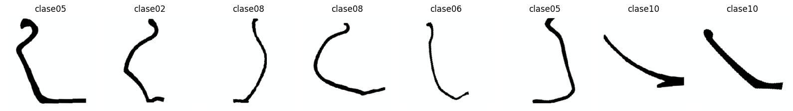
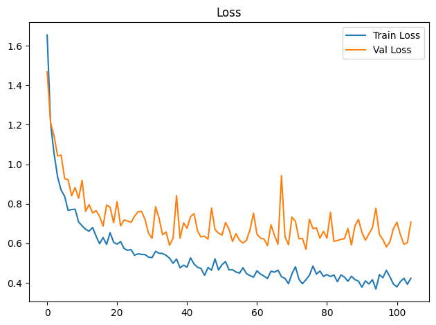
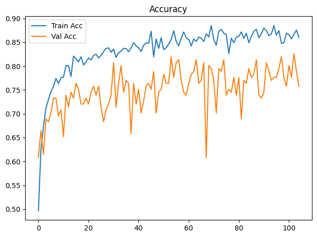
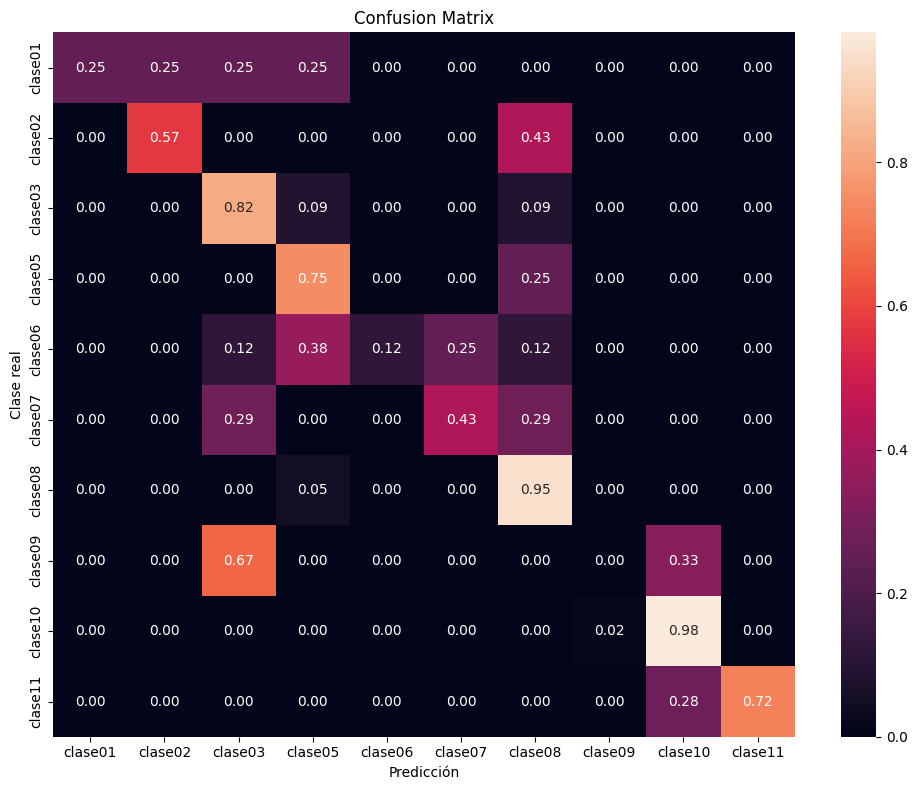

Dispositivo utilizado para procesamiento: CUDA - NVIDIA GeForce GTX 1650Entrenamiento de CNN ResNet-18 con Transfer Learning
Objetivos
- Construir un modelo baseline de clasificación mediante transfer learning con ResNet18 preentrenada.
- Entrenar inicialmente solo la capa clasificadora y descongelar
layer4enUNFREEZE_EPOCHcon una tasa de aprendizaje menor. - Aplicar transformaciones y aumentación de datos al conjunto de entrenamiento.
- Entrenar y validar el modelo registrando loss y accuracy por época.
- Detener el entrenamiento si val_loss no mejora suficientemente durante la paciencia configurada.
- Evaluar el modelo de la mejor época de validación sobre el conjunto de prueba.
- Analizar los resultados mediante accuracy, precision, recall, F1-score, reporte de clasificación y matriz de confusión normalizada.
- Guardar los pesos restaurados de la mejor época de validación (o los finales si se desactiva la parada anticipada).
Dispositivo para procesamiento
División de datos
La pertenencia de cada imagen a train, val o test se lee de la metadata generada por el notebook de división. La relación se realiza mediante ruta_relativa; por tanto, el split no se recalcula aunque cambien la semilla o los parámetros del entrenamiento.
Dataset seleccionado: completos
Directorio de datos: /home/rafael/Dev/vasijas/data/10.cuadrados_divididos_en_train_val_y_test
Metadata de split: data/10.cuadrados_divididos_en_train_val_y_test/metadata.csv
Clases: clase01 clase02 clase03 clase05 clase06 clase07 clase08 clase09 clase10 clase11
Split persistido -> train: 749, val: 161, test: 161
Epoch 1/300
Train Loss: 1.6541 | Train Acc: 0.4967 | Val Loss: 1.4680 | Val Acc: 0.6087
Tiempo de epoch: 0:00:07.909150
Epoch 2/300
Train Loss: 1.2026 | Train Acc: 0.6248 | Val Loss: 1.2087 | Val Acc: 0.6646
Tiempo de epoch: 0:00:05.124809
Epoch 3/300
Train Loss: 1.0517 | Train Acc: 0.6729 | Val Loss: 1.1419 | Val Acc: 0.6149
Tiempo de epoch: 0:00:05.095061
Epoch 4/300
Train Loss: 0.9351 | Train Acc: 0.7116 | Val Loss: 1.0425 | Val Acc: 0.6894
Tiempo de epoch: 0:00:05.083452
Epoch 5/300
Train Loss: 0.8691 | Train Acc: 0.7303 | Val Loss: 1.0469 | Val Acc: 0.6832
Tiempo de epoch: 0:00:05.113122
Epoch 6/300
Train Loss: 0.8382 | Train Acc: 0.7463 | Val Loss: 0.9273 | Val Acc: 0.7019
Tiempo de epoch: 0:00:05.052157
Epoch 7/300
Train Loss: 0.7666 | Train Acc: 0.7570 | Val Loss: 0.9216 | Val Acc: 0.7329
Tiempo de epoch: 0:00:05.046595
Epoch 8/300
Train Loss: 0.7709 | Train Acc: 0.7744 | Val Loss: 0.8407 | Val Acc: 0.7329
Tiempo de epoch: 0:00:05.060612
Epoch 9/300
Train Loss: 0.7724 | Train Acc: 0.7637 | Val Loss: 0.8826 | Val Acc: 0.6957
Tiempo de epoch: 0:00:04.949878
Epoch 10/300
Train Loss: 0.7076 | Train Acc: 0.7757 | Val Loss: 0.8283 | Val Acc: 0.7081
Tiempo de epoch: 0:00:05.013311
Epoch 11/300
Train Loss: 0.6884 | Train Acc: 0.7770 | Val Loss: 0.9184 | Val Acc: 0.6522
Tiempo de epoch: 0:00:05.141409
Epoch 12/300
Train Loss: 0.6707 | Train Acc: 0.8011 | Val Loss: 0.7618 | Val Acc: 0.7391
Tiempo de epoch: 0:00:05.107962
Epoch 13/300
Train Loss: 0.6615 | Train Acc: 0.8011 | Val Loss: 0.7958 | Val Acc: 0.7143
Tiempo de epoch: 0:00:05.067269
Epoch 14/300
Train Loss: 0.6801 | Train Acc: 0.7784 | Val Loss: 0.7537 | Val Acc: 0.7453
Tiempo de epoch: 0:00:05.140942
Epoch 15/300
Train Loss: 0.6355 | Train Acc: 0.8211 | Val Loss: 0.7655 | Val Acc: 0.7329
Tiempo de epoch: 0:00:05.125515
Epoch 16/300
Train Loss: 0.5982 | Train Acc: 0.8158 | Val Loss: 0.7358 | Val Acc: 0.7640
Tiempo de epoch: 0:00:05.040711
Epoch 17/300
Train Loss: 0.6291 | Train Acc: 0.8091 | Val Loss: 0.6871 | Val Acc: 0.7516
Tiempo de epoch: 0:00:05.070666
Epoch 18/300
Train Loss: 0.5945 | Train Acc: 0.8198 | Val Loss: 0.7941 | Val Acc: 0.7205
Tiempo de epoch: 0:00:05.084887
Epoch 19/300
Train Loss: 0.6539 | Train Acc: 0.8024 | Val Loss: 0.7825 | Val Acc: 0.7205
Tiempo de epoch: 0:00:05.093601
Epoch 20/300
Train Loss: 0.6050 | Train Acc: 0.8091 | Val Loss: 0.7040 | Val Acc: 0.7329
Tiempo de epoch: 0:00:05.048049
Epoch 21/300
Train Loss: 0.5960 | Train Acc: 0.8171 | Val Loss: 0.8107 | Val Acc: 0.7205
Tiempo de epoch: 0:00:05.225792
Epoch 22/300
Train Loss: 0.6088 | Train Acc: 0.8131 | Val Loss: 0.6886 | Val Acc: 0.7453
Tiempo de epoch: 0:00:05.083178
Epoch 23/300
Train Loss: 0.5734 | Train Acc: 0.8224 | Val Loss: 0.7185 | Val Acc: 0.7578
Tiempo de epoch: 0:00:05.120622
Epoch 24/300
Train Loss: 0.5647 | Train Acc: 0.8251 | Val Loss: 0.7126 | Val Acc: 0.7391
Tiempo de epoch: 0:00:05.236868
Epoch 25/300
Train Loss: 0.5684 | Train Acc: 0.8171 | Val Loss: 0.7059 | Val Acc: 0.7578
Tiempo de epoch: 0:00:05.180688
Epoch 26/300
Train Loss: 0.5392 | Train Acc: 0.8224 | Val Loss: 0.7375 | Val Acc: 0.7143
Tiempo de epoch: 0:00:05.305833
Epoch 27/300
Train Loss: 0.5471 | Train Acc: 0.8304 | Val Loss: 0.7595 | Val Acc: 0.6832
Tiempo de epoch: 0:00:05.105222
Epoch 28/300
Train Loss: 0.5441 | Train Acc: 0.8371 | Val Loss: 0.7618 | Val Acc: 0.7081
Tiempo de epoch: 0:00:05.195929
Epoch 29/300
Train Loss: 0.5428 | Train Acc: 0.8385 | Val Loss: 0.7198 | Val Acc: 0.7205
Tiempo de epoch: 0:00:05.186669
Epoch 30/300
Train Loss: 0.5299 | Train Acc: 0.8291 | Val Loss: 0.6504 | Val Acc: 0.7391
Tiempo de epoch: 0:00:05.441808
Epoch 31/300
Train Loss: 0.5276 | Train Acc: 0.8358 | Val Loss: 0.6255 | Val Acc: 0.8075
Tiempo de epoch: 0:00:05.139948
Epoch 32/300
Train Loss: 0.5596 | Train Acc: 0.8184 | Val Loss: 0.7852 | Val Acc: 0.7143
Tiempo de epoch: 0:00:05.161857
Epoch 33/300
Train Loss: 0.5496 | Train Acc: 0.8278 | Val Loss: 0.7260 | Val Acc: 0.7640
Tiempo de epoch: 0:00:05.154245
Epoch 34/300
Train Loss: 0.5485 | Train Acc: 0.8318 | Val Loss: 0.6437 | Val Acc: 0.8012
Tiempo de epoch: 0:00:05.156924
Epoch 35/300
Train Loss: 0.5393 | Train Acc: 0.8371 | Val Loss: 0.6573 | Val Acc: 0.7453
Tiempo de epoch: 0:00:05.021184
Epoch 36/300
Train Loss: 0.5246 | Train Acc: 0.8371 | Val Loss: 0.5904 | Val Acc: 0.7702
Tiempo de epoch: 0:00:05.221230
Epoch 37/300
Train Loss: 0.4988 | Train Acc: 0.8304 | Val Loss: 0.6262 | Val Acc: 0.7640
Tiempo de epoch: 0:00:05.128671
Epoch 38/300
Train Loss: 0.5205 | Train Acc: 0.8385 | Val Loss: 0.8411 | Val Acc: 0.6584
Tiempo de epoch: 0:00:05.055431
Epoch 39/300
Train Loss: 0.4760 | Train Acc: 0.8491 | Val Loss: 0.6260 | Val Acc: 0.7640
Tiempo de epoch: 0:00:05.260088
Epoch 40/300
Train Loss: 0.4892 | Train Acc: 0.8425 | Val Loss: 0.7034 | Val Acc: 0.7205
Tiempo de epoch: 0:00:05.250039
Epoch 41/300
Train Loss: 0.4793 | Train Acc: 0.8385 | Val Loss: 0.6764 | Val Acc: 0.7516
Tiempo de epoch: 0:00:05.182851
Epoch 42/300
Train Loss: 0.5266 | Train Acc: 0.8304 | Val Loss: 0.7353 | Val Acc: 0.7019
Tiempo de epoch: 0:00:05.121918
Epoch 43/300
Train Loss: 0.4954 | Train Acc: 0.8438 | Val Loss: 0.7498 | Val Acc: 0.7267
Tiempo de epoch: 0:00:05.069436
Epoch 44/300
Train Loss: 0.4788 | Train Acc: 0.8491 | Val Loss: 0.6630 | Val Acc: 0.7578
Tiempo de epoch: 0:00:05.135352
Epoch 45/300
Train Loss: 0.4727 | Train Acc: 0.8478 | Val Loss: 0.6324 | Val Acc: 0.7640
Tiempo de epoch: 0:00:05.350270
Epoch 46/300
Train Loss: 0.4380 | Train Acc: 0.8732 | Val Loss: 0.6359 | Val Acc: 0.7516
Tiempo de epoch: 0:00:05.114357
Epoch 47/300
Train Loss: 0.4778 | Train Acc: 0.8198 | Val Loss: 0.6215 | Val Acc: 0.7888
Tiempo de epoch: 0:00:05.205655
Epoch 48/300
Train Loss: 0.4640 | Train Acc: 0.8571 | Val Loss: 0.7783 | Val Acc: 0.7019
Tiempo de epoch: 0:00:05.211897
Epoch 49/300
Train Loss: 0.5215 | Train Acc: 0.8371 | Val Loss: 0.6694 | Val Acc: 0.7453
Tiempo de epoch: 0:00:05.105353
Epoch 50/300
Train Loss: 0.4646 | Train Acc: 0.8598 | Val Loss: 0.6518 | Val Acc: 0.7516
Tiempo de epoch: 0:00:05.124910
Epoch 51/300
Train Loss: 0.4921 | Train Acc: 0.8344 | Val Loss: 0.6413 | Val Acc: 0.7826
Tiempo de epoch: 0:00:05.074152
Epoch 52/300
Train Loss: 0.5079 | Train Acc: 0.8385 | Val Loss: 0.7056 | Val Acc: 0.7640
Tiempo de epoch: 0:00:05.125073
Epoch 53/300
Train Loss: 0.4655 | Train Acc: 0.8465 | Val Loss: 0.6712 | Val Acc: 0.7640
Tiempo de epoch: 0:00:05.299332
Epoch 54/300
Train Loss: 0.4665 | Train Acc: 0.8558 | Val Loss: 0.6094 | Val Acc: 0.8199
Tiempo de epoch: 0:00:05.256562
Epoch 55/300
Train Loss: 0.4548 | Train Acc: 0.8745 | Val Loss: 0.6490 | Val Acc: 0.7764
Tiempo de epoch: 0:00:05.120173
Epoch 56/300
Train Loss: 0.4490 | Train Acc: 0.8518 | Val Loss: 0.6158 | Val Acc: 0.8075
Tiempo de epoch: 0:00:05.088058
Epoch 57/300
Train Loss: 0.4766 | Train Acc: 0.8425 | Val Loss: 0.6013 | Val Acc: 0.8137
Tiempo de epoch: 0:00:05.177144
Epoch 58/300
Train Loss: 0.4462 | Train Acc: 0.8585 | Val Loss: 0.6154 | Val Acc: 0.7702
Tiempo de epoch: 0:00:05.163548
Epoch 59/300
Train Loss: 0.4366 | Train Acc: 0.8718 | Val Loss: 0.6690 | Val Acc: 0.7453
Tiempo de epoch: 0:00:05.040041
Epoch 60/300
Train Loss: 0.4287 | Train Acc: 0.8598 | Val Loss: 0.7523 | Val Acc: 0.7391
Tiempo de epoch: 0:00:05.118177
Epoch 61/300
Train Loss: 0.4607 | Train Acc: 0.8558 | Val Loss: 0.6458 | Val Acc: 0.7640
Tiempo de epoch: 0:00:05.179987
Epoch 62/300
Train Loss: 0.4441 | Train Acc: 0.8425 | Val Loss: 0.6262 | Val Acc: 0.7826
Tiempo de epoch: 0:00:05.165369
Epoch 63/300
Train Loss: 0.4342 | Train Acc: 0.8571 | Val Loss: 0.6219 | Val Acc: 0.7888
Tiempo de epoch: 0:00:05.195607
Epoch 64/300
Train Loss: 0.4219 | Train Acc: 0.8518 | Val Loss: 0.5877 | Val Acc: 0.8137
Tiempo de epoch: 0:00:05.161887
Epoch 65/300
Train Loss: 0.4590 | Train Acc: 0.8611 | Val Loss: 0.6943 | Val Acc: 0.7640
Tiempo de epoch: 0:00:05.179617
Epoch 66/300
Train Loss: 0.4539 | Train Acc: 0.8585 | Val Loss: 0.6401 | Val Acc: 0.7702
Tiempo de epoch: 0:00:05.183832
Epoch 67/300
Train Loss: 0.4642 | Train Acc: 0.8518 | Val Loss: 0.5953 | Val Acc: 0.8075
Tiempo de epoch: 0:00:05.187750
Epoch 68/300
Train Loss: 0.4309 | Train Acc: 0.8678 | Val Loss: 0.9428 | Val Acc: 0.6087
Tiempo de epoch: 0:00:05.276794
Epoch 69/300
Train Loss: 0.4225 | Train Acc: 0.8611 | Val Loss: 0.6345 | Val Acc: 0.8012
Tiempo de epoch: 0:00:05.138795
Epoch 70/300
Train Loss: 0.3956 | Train Acc: 0.8852 | Val Loss: 0.5929 | Val Acc: 0.7950
Tiempo de epoch: 0:00:05.289466
Epoch 71/300
Train Loss: 0.4460 | Train Acc: 0.8558 | Val Loss: 0.7331 | Val Acc: 0.7702
Tiempo de epoch: 0:00:05.139110
Epoch 72/300
Train Loss: 0.4812 | Train Acc: 0.8438 | Val Loss: 0.7108 | Val Acc: 0.7019
Tiempo de epoch: 0:00:05.255838
Epoch 73/300
Train Loss: 0.4177 | Train Acc: 0.8732 | Val Loss: 0.6226 | Val Acc: 0.7950
Tiempo de epoch: 0:00:05.328762
Epoch 74/300
Train Loss: 0.3953 | Train Acc: 0.8772 | Val Loss: 0.6251 | Val Acc: 0.7888
Tiempo de epoch: 0:00:05.173628
Epoch 75/300
Train Loss: 0.4163 | Train Acc: 0.8692 | Val Loss: 0.5697 | Val Acc: 0.8137
Tiempo de epoch: 0:00:05.221976
Epoch 76/300
Train Loss: 0.4386 | Train Acc: 0.8665 | Val Loss: 0.7215 | Val Acc: 0.7391
Tiempo de epoch: 0:00:05.243106
Epoch 77/300
Train Loss: 0.4855 | Train Acc: 0.8264 | Val Loss: 0.6743 | Val Acc: 0.7516
Tiempo de epoch: 0:00:05.337161
Epoch 78/300
Train Loss: 0.4443 | Train Acc: 0.8585 | Val Loss: 0.6781 | Val Acc: 0.7453
Tiempo de epoch: 0:00:05.156126
Epoch 79/300
Train Loss: 0.4596 | Train Acc: 0.8491 | Val Loss: 0.6261 | Val Acc: 0.7764
Tiempo de epoch: 0:00:05.173765
Epoch 80/300
Train Loss: 0.4325 | Train Acc: 0.8611 | Val Loss: 0.6609 | Val Acc: 0.7391
Tiempo de epoch: 0:00:05.186076
Epoch 81/300
Train Loss: 0.4419 | Train Acc: 0.8625 | Val Loss: 0.6263 | Val Acc: 0.7764
Tiempo de epoch: 0:00:05.178263
Epoch 82/300
Train Loss: 0.4317 | Train Acc: 0.8718 | Val Loss: 0.7562 | Val Acc: 0.6894
Tiempo de epoch: 0:00:05.117270
Epoch 83/300
Train Loss: 0.4399 | Train Acc: 0.8585 | Val Loss: 0.6102 | Val Acc: 0.7702
Tiempo de epoch: 0:00:05.140876
Epoch 84/300
Train Loss: 0.4054 | Train Acc: 0.8692 | Val Loss: 0.6145 | Val Acc: 0.7640
Tiempo de epoch: 0:00:05.409767
Epoch 85/300
Train Loss: 0.4402 | Train Acc: 0.8491 | Val Loss: 0.6203 | Val Acc: 0.7950
Tiempo de epoch: 0:00:05.382111
Epoch 86/300
Train Loss: 0.4289 | Train Acc: 0.8625 | Val Loss: 0.6235 | Val Acc: 0.7764
Tiempo de epoch: 0:00:05.145808
Epoch 87/300
Train Loss: 0.4080 | Train Acc: 0.8732 | Val Loss: 0.6751 | Val Acc: 0.7826
Tiempo de epoch: 0:00:05.198180
Epoch 88/300
Train Loss: 0.4335 | Train Acc: 0.8772 | Val Loss: 0.5914 | Val Acc: 0.8137
Tiempo de epoch: 0:00:05.219365
Epoch 89/300
Train Loss: 0.4163 | Train Acc: 0.8598 | Val Loss: 0.6882 | Val Acc: 0.7391
Tiempo de epoch: 0:00:05.226003
Epoch 90/300
Train Loss: 0.4088 | Train Acc: 0.8678 | Val Loss: 0.7211 | Val Acc: 0.7329
Tiempo de epoch: 0:00:05.293922
Epoch 91/300
Train Loss: 0.3782 | Train Acc: 0.8798 | Val Loss: 0.6550 | Val Acc: 0.7453
Tiempo de epoch: 0:00:05.311954
Epoch 92/300
Train Loss: 0.4100 | Train Acc: 0.8745 | Val Loss: 0.6158 | Val Acc: 0.8075
Tiempo de epoch: 0:00:05.196147
Epoch 93/300
Train Loss: 0.3941 | Train Acc: 0.8638 | Val Loss: 0.6473 | Val Acc: 0.7888
Tiempo de epoch: 0:00:05.197602
Epoch 94/300
Train Loss: 0.4156 | Train Acc: 0.8678 | Val Loss: 0.6790 | Val Acc: 0.7702
Tiempo de epoch: 0:00:05.380853
Epoch 95/300
Train Loss: 0.3689 | Train Acc: 0.8852 | Val Loss: 0.7771 | Val Acc: 0.7764
Tiempo de epoch: 0:00:05.179900
Epoch 96/300
Train Loss: 0.4413 | Train Acc: 0.8652 | Val Loss: 0.6450 | Val Acc: 0.7764
Tiempo de epoch: 0:00:05.181183
Epoch 97/300
Train Loss: 0.4258 | Train Acc: 0.8745 | Val Loss: 0.6188 | Val Acc: 0.7950
Tiempo de epoch: 0:00:05.310161
Epoch 98/300
Train Loss: 0.4631 | Train Acc: 0.8478 | Val Loss: 0.5819 | Val Acc: 0.8199
Tiempo de epoch: 0:00:05.293825
Epoch 99/300
Train Loss: 0.4306 | Train Acc: 0.8491 | Val Loss: 0.6075 | Val Acc: 0.7764
Tiempo de epoch: 0:00:05.268798
Epoch 100/300
Train Loss: 0.3938 | Train Acc: 0.8692 | Val Loss: 0.6746 | Val Acc: 0.7578
Tiempo de epoch: 0:00:05.079578
Epoch 101/300
Train Loss: 0.3793 | Train Acc: 0.8665 | Val Loss: 0.7068 | Val Acc: 0.8012
Tiempo de epoch: 0:00:05.264535
Epoch 102/300
Train Loss: 0.4063 | Train Acc: 0.8571 | Val Loss: 0.6443 | Val Acc: 0.7764
Tiempo de epoch: 0:00:05.190176
Epoch 103/300
Train Loss: 0.4231 | Train Acc: 0.8665 | Val Loss: 0.5950 | Val Acc: 0.8261
Tiempo de epoch: 0:00:05.295965
Epoch 104/300
Train Loss: 0.3928 | Train Acc: 0.8758 | Val Loss: 0.6036 | Val Acc: 0.7888
Tiempo de epoch: 0:00:05.273822
Epoch 105/300
Train Loss: 0.4229 | Train Acc: 0.8598 | Val Loss: 0.7071 | Val Acc: 0.7578
Tiempo de epoch: 0:00:05.096633
Parada anticipada en epoch 105: 30 épocas sin mejora suficiente de val_loss.
Se restauran los pesos de epoch 75 (val_loss=0.5697).
Tiempo total de entrenamiento: 0:09:06.146239

Test Acc: 0.8012
precision recall f1-score support
clase01 1.00 0.25 0.40 4
clase02 0.80 0.57 0.67 7
clase03 0.60 0.82 0.69 11
clase05 0.46 0.75 0.57 8
clase06 1.00 0.12 0.22 8
clase07 0.60 0.43 0.50 7
clase08 0.82 0.95 0.88 42
clase09 0.00 0.00 0.00 3
clase10 0.90 0.98 0.94 53
clase11 1.00 0.72 0.84 18
accuracy 0.80 161
macro avg 0.72 0.56 0.57 161
weighted avg 0.82 0.80 0.78 161

Modelo guardado en: output/models/model_resnet18_bs16_lr1e-3_base.pth